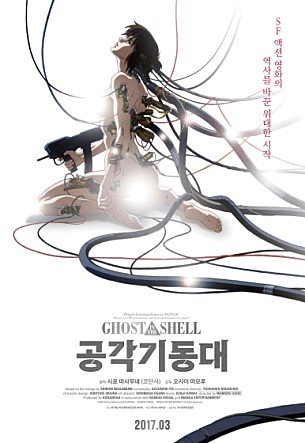

서기 2029년. 기술의 발전으로 네트워크가 세상을 장악했고 사이보그 테크놀로지는 인간이라는 존재를 새롭게 규정하고 있다. ‘공각기동대’라는 별칭으로도 불리는 공안 9과는 수상 직속의 특수부대. 네트워크나 현실에서의 테러 진압이 주임무다. 아라마키 부장이 이끄는 공안 9과의 에이스는 쿠사나기다. 뇌의 일부만 인간이며 나머지는 모두 기계인 사이보그 쿠사나기는 바투, 토그사 등과 함께 임무에 뛰어든다.
현재 가장 시급하게 제거해야 할 적은 정체불명의 해커 ‘인형사’(The Puppet Master). 하지만 인형사는 인간이 아닌, 네트워크에 존재하는 프로그램으로 ‘프로젝트 2501’의 산물이다. 이 프로젝트는 외무성 소속의 공안 6과에서 비밀 외교와 조작 업무를 수행하기 위해 꾸민 것이지만, 프로그램은 네트워크 내에서 나름의 생명력을 지니게 된다. 결국 공안 6과는 인형사를 회수해 파괴하기로 결정한다.
하지만 인형사는 쿠사나기를 만나기 위해 어느 인체 모형에 의도적으로 들어가고, 왠지 모르게 인형사라는 존재에 끌리는 쿠사나기는 결국 그와 접속한다. 인형사는 쿠사나기와 융합을 원하고, 그 결과 새로운 존재가 탄생한다.
